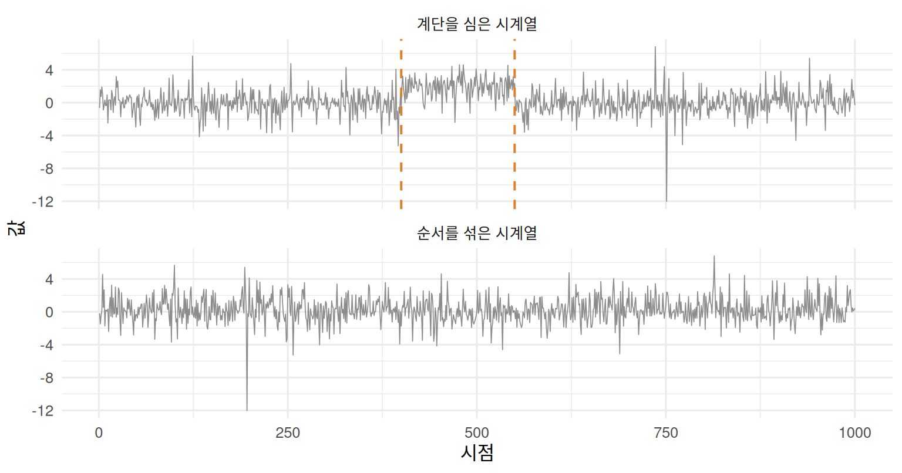

library(ggplot2)
library(changepoint.np)
set.seed(20240719)
theme_set(theme_minimal(base_size = 12))
col_main <- "#325d88"; col_alt <- "#d9822b"
노트연재: 워시 트레이딩 논문의 검정법
이 연재는 가상자산이용자보호법 시행이 국내 가상자산시장의 워시 트레이딩에 미친 영향(이준호·최범전, 2026, working paper)에서 쓰인 통계적 방법을 모의실험과 함께 자세히 설명한다. 예시는 모두 모의 자료이다. 첫 번째 지표인 벤포드 적합도는 별도의 글 벤포드 적합도 검정에서 다룬다.
가상자산이용자보호법 시행이 국내 가상자산시장의 워시 트레이딩에 미친 영향(이준호·최범전, 2026, working paper)의 세 번째 지표는 거래량 시계열에서 탐지한 변화점의 수이다. 벤포드 법칙과 꼬리지수는 거래량의 시간 순서를 고려하지 않지만, 워시 트레이딩 프로그램은 정해진 시점에 가동되고 중단되므로 거래량에 계단 형태의 흔적을 남길 수 있다. 이 글에서는 변화점 탐지 방법인 PELT와, 그 결과를 좌우하는 벌점을 자료에서 보정하는 절차를 살펴본다. 예시는 모두 모의 자료이다.
벌점화된 최적 분할
PELT(Killick, Fearnhead and Eckley, 2012)는 시계열 \(y_1,\ldots,y_n\) 을 변화점 \(\tau_1<\cdots<\tau_k\) 로 나누는 분할 가운데
\[ \sum_{j=0}^{k}C\!\left(y_{(\tau_j+1):\tau_{j+1}}\right)+\lambda k,\qquad \tau_0=0,\ \tau_{k+1}=n \tag{1}\]
를 최소로 하는 분할을 찾는다. 논문은 구간 비용 \(C\) 로 Haynes, Fearnhead and Eckley (2017)의 비모수 비용, 즉 구간의 경험분포함수를 \(Q=\lceil4\ln n\rceil\) 개의 분위수 평가점에서 이항 음의 로그우도로 평가한 값을 쓴다. 경험분포만 사용하므로 두꺼운 꼬리나 거래량 0의 몰림에 대한 분포 가정이 필요 없고, 단조 변환과 극단값의 영향을 받지 않는다.
벌점을 검정의 크기처럼 보정하기
변화점 탐지 결과는 벌점 \(\lambda\) 에 크게 좌우된다. \(\lambda\) 가 작으면 변화가 없는 곳에서도 변화점이 잡히고(거짓 양성), 크면 실제 변화를 놓친다. 논문은 \(\lambda=k\ln n\) 으로 두고 \(k\) 를 가설검정의 크기(size)를 맞추듯이 자료에서 보정한다.
- 귀무가설 만들기: 전처리한 실제 시계열의 시간 순서만 무작위로 섞으면, 값의 분포는 그대로이면서 시간에 따른 변화는 사라진다. 섞은 시계열에서 탐지되는 변화점은 모두 거짓 양성이다.
- 크기 5% 맞추기: 후보 \(k\) 가운데 섞은 시계열의 95% 이상에서 변화점이 하나도 탐지되지 않는 가장 작은 값을 채택한다. 이는 “변화가 없는 시계열에서 변화점을 하나라도 잡을 확률”을 5% 이하로 묶는 것이다.
- 검정력 점검: 섞은 시계열의 무작위 위치에 크기와 지속 시간이 다른 계단을 인위적으로 더하고, 경계 근처에서 변화점이 탐지되는 비율로 탐지력을 확인한다.
아래는 두꺼운 꼬리를 가진 \(t_4\) 분포 1,000개를 시계열로 놓고 같은 절차를 적용한 예이다.
n_cp <- 1000
n_cpts <- function(y, k) length(cpts(cpt.np(y, penalty = "Manual", pen.value = k * log(length(y)),
method = "PELT", minseglen = 6,
nquantiles = ceiling(4 * log(length(y))))))
ks <- c(1, 2, 3, 4, 5)
fp <- sapply(ks, function(k) mean(replicate(40, n_cpts(sample(rt(n_cp, 4)), k) > 0)))
knitr::kable(data.frame(k = ks, `변화점이 하나라도 탐지된 비율` = fp, check.names = FALSE), digits = 3)| k | 변화점이 하나라도 탐지된 비율 |
|---|---|
| 1 | 1.000 |
| 2 | 1.000 |
| 3 | 0.475 |
| 4 | 0.125 |
| 5 | 0.000 |
y_step <- rt(n_cp, 4); y_step[401:550] <- y_step[401:550] + 2
y_shuf <- sample(y_step)
cp <- function(y) cpts(cpt.np(y, penalty = "Manual", pen.value = 4 * log(n_cp), method = "PELT",
minseglen = 6, nquantiles = ceiling(4 * log(n_cp))))
df_cp <- rbind(data.frame(t = 1:n_cp, y = y_step, 계열 = "계단을 심은 시계열"),
data.frame(t = 1:n_cp, y = y_shuf, 계열 = "순서를 섞은 시계열"))
lines_cp <- rbind(data.frame(cp = cp(y_step), 계열 = rep("계단을 심은 시계열", length(cp(y_step)))),
data.frame(cp = cp(y_shuf), 계열 = rep("순서를 섞은 시계열", length(cp(y_shuf)))))
ggplot(df_cp, aes(t, y)) +
geom_line(colour = "grey55", linewidth = 0.3) +
geom_vline(data = lines_cp, aes(xintercept = cp), colour = col_alt, linetype = "dashed", linewidth = 0.7) +
facet_wrap(~계열, ncol = 1) + labs(x = "시점", y = "값")
\(k\) 가 작으면 변화가 전혀 없는 섞은 시계열에서도 변화점이 거의 항상 잡히고, \(k\) 를 키우면 거짓 양성 비율이 빠르게 0으로 떨어진다. 보정된 벌점에서는 섞은 시계열에서 변화점이 잡히지 않으면서 심어 둔 계단의 경계는 찾아낸다.
이 보정의 한계도 분명하다. 순서를 섞으면 자기상관도 함께 사라지므로, 섞은 시계열은 “변화가 없고 독립인 시계열”이라는 귀무가설을 나타낸다. 실제 거래량처럼 자기상관이 있으면 변화가 없어도 변화점이 잡힐 수 있다. 논문이 변화점 수의 절대 수준보다 시행 전후의 상대적 변화와 대형 그룹 대비 비교에 초점을 맞추는 이유이다.
정리
- PELT는 구간 비용과 변화점 벌점의 합을 최소로 하는 분할을 정확하게, 그리고 빠르게 찾는다.
- 비모수 비용은 경험분포만 쓰므로 두꺼운 꼬리나 거래량 0의 몰림에 대한 가정이 필요 없다.
- 벌점은 순서를 섞은 시계열에서 거짓 양성이 5%를 넘지 않는 가장 작은 값으로 정하고, 심어 둔 계단으로 탐지력을 점검한다.
다음 글에서는 이렇게 만든 지표를 법 시행 전후로 비교하는 순위 검정과 Holm 보정을 다룬다.
참고문헌
- Haynes, K., Fearnhead, P. and Eckley, I. A. (2017). A computationally efficient nonparametric approach for changepoint detection. Statistics and Computing, 27, 1293–1305.
- Killick, R., Fearnhead, P. and Eckley, I. A. (2012). Optimal detection of changepoints with a linear computational cost. Journal of the American Statistical Association, 107, 1590–1598.